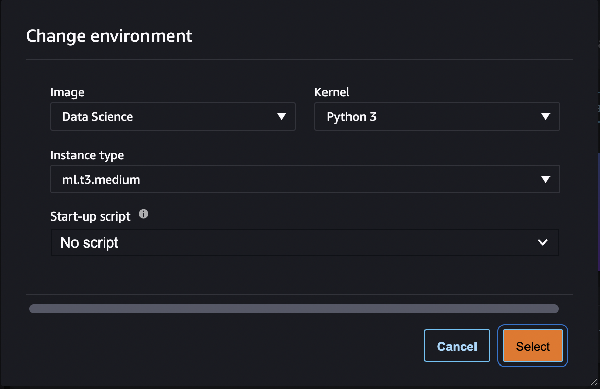
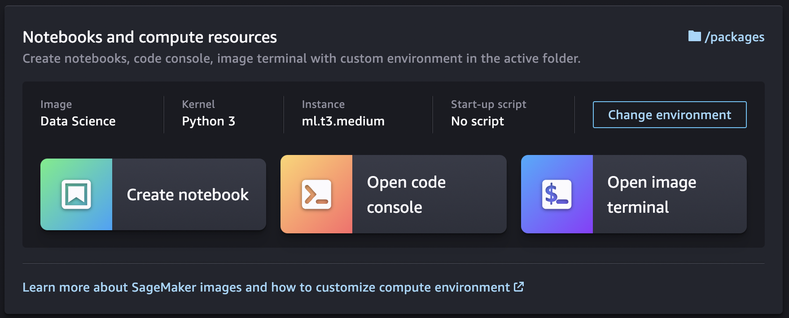

Create or Open an Amazon SageMaker Studio Notebook
When you Create a Notebook from the File Menu in Amazon SageMaker Studio or Open a notebook in Studio for the first time, you are
prompted to set up your environment by choosing a SageMaker image, a kernel, an instance type, and,
optionally, a lifecycle configuration script that runs on image start-up. SageMaker launches the
notebook on an instance of the chosen type. By default, the instance type is set to
ml.t3.medium (available as part of the AWS
Free Tierml.g4dn.xlarge.
If you create or open additional notebooks that use the same instance type, whether or not the notebooks use the same kernel, the notebooks run on the same instance of that instance type.
After you launch a notebook, you can change its instance type, SageMaker image, and kernel from within the notebook. For more information, see Change an Instance Type and Change an Image or a Kernel.
Note
You can have only one instance of each instance type. Each instance can have multiple SageMaker images running on it. Each SageMaker image can run multiple kernels or terminal instances.
Billing occurs per instance and starts when the first instance of a given instance type is launched. If you want to create or open a notebook without the risk of incurring charges, open the notebook from the File menu and choose No Kernel from the Select Kernel dialog. You can read and edit a notebook without a running kernel but you can't run cells.
Billing ends when the SageMaker image for the instance is shut down. For more information, see Usage Metering.
For information about shutting down the notebook, see Shut Down Resources.
Topics
Open a notebook in Studio
Amazon SageMaker Studio can only open notebooks listed in the Studio file browser. For instructions on uploading a notebook to the file browser, see Upload Files to SageMaker Studio or Clone a Git Repository in SageMaker Studio.
To open a notebook
-
In the left sidebar, choose the File Browser icon (
 ) to display the file browser.
) to display the file browser. -
Browse to a notebook file and double-click it to open the notebook in a new tab.
Create a Notebook from the File Menu
To create a notebook from the File menu
-
From the Studio menu, choose File, choose New, and then choose Notebook.
-
In the Change environment dialog, use the dropdown menus to select your Image, Kernel, Instance type, and Start-up script, then choose Select. Your notebook launches and opens in a new Studio tab.

Create a Notebook from the Launcher
To create a notebook from the Launcher
-
To open the Launcher, choose Amazon SageMaker Studio at the top left of the Studio interface or use the keyboard shortcut
Ctrl + Shift + L.To learn about all the available ways to open the Launcher, see Use the Amazon SageMaker Studio Launcher
-
In the Launcher, in the Notebooks and compute resources section, choose Change environment.
 -
In the Change environment dialog, use the dropdown menus to select your Image, Kernel, Instance type, and Start-up script, then choose Select.
-
In the Launcher, choose Create notebook. Your notebook launches and opens in a new Studio tab.
To view the notebook's kernel session, in the left sidebar, choose the Running
Terminals and Kernels icon (
 ). You can stop the notebook's kernel session from this view.
). You can stop the notebook's kernel session from this view.
List of the available instance types, images, and kernels
For a list of all available resources, see: